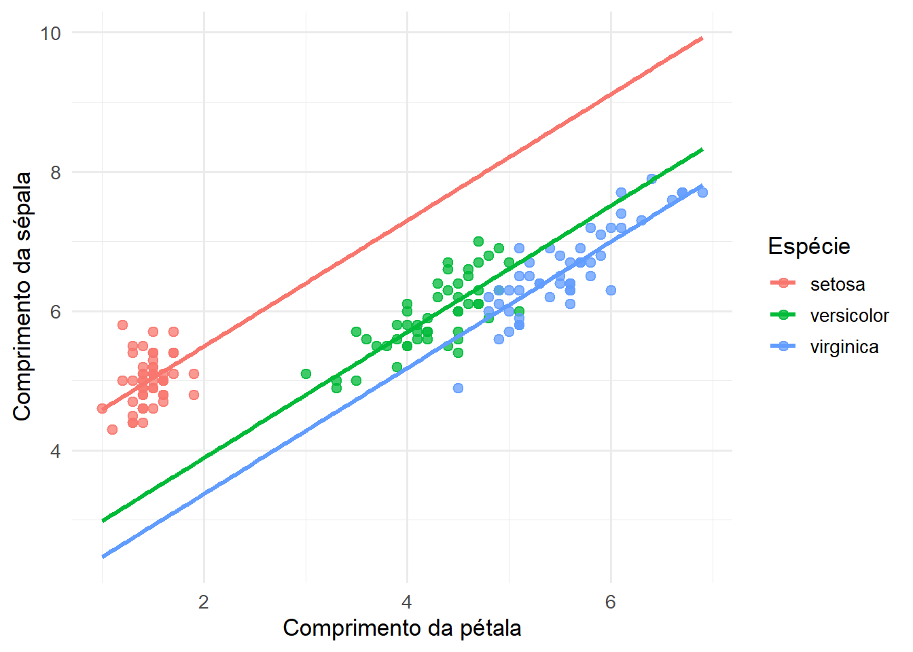
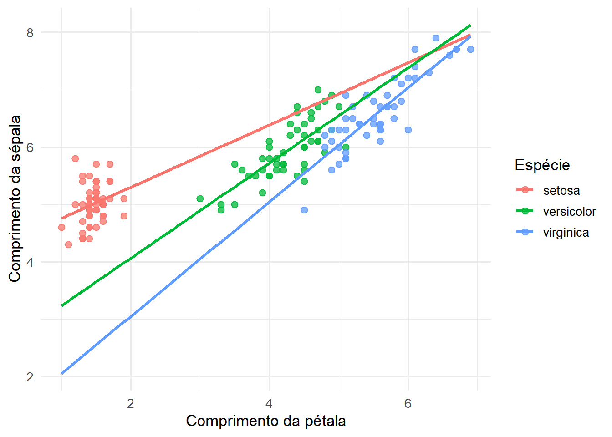

17 Análise de Covariância (ANCOVA)
17.1 Introdução e motivação
No capítulo anterior, vimos que variáveis qualitativas podem ser incorporadas ao Modelo de Regressão Linear Múltipla por meio de variáveis fictícias, também chamadas de dummies ou flags. Essa construção permite comparar grupos dentro da mesma estrutura matricial dos modelos lineares.
Em muitas aplicações, entretanto, os grupos que desejamos comparar também diferem em relação a variáveis quantitativas que influenciam a resposta. Nesses casos, comparar apenas as médias observadas pode confundir o efeito do grupo com o efeito dessas covariáveis.
Por exemplo, ao comparar o desempenho de estudantes submetidos a diferentes métodos de ensino, diferenças no tempo prévio de estudo podem influenciar o resultado. Em estudos clínicos, tratamentos podem ser comparados após ajustar idade, peso ou medida basal. Em estudos econômicos, grupos podem ser comparados após controlar renda, experiência profissional ou porte da empresa.
A ANCOVA (Analysis of Covariance) corresponde ao caso em que fatores categóricos e covariáveis quantitativas aparecem simultaneamente em um modelo linear. Seu principal objetivo é comparar grupos após ajustar o efeito de variáveis contínuas que também influenciam a resposta (Kutner et al., 2005; Montgomery; Peck; Vining, 2021).
Essa abordagem permite avaliar se as diferenças entre grupos permanecem mesmo após controlar fatores contínuos relevantes. Em consequência, as comparações passam a ser realizadas por meio de médias ajustadas, isto é, médias obtidas após considerar simultaneamente os efeitos das covariáveis e dos fatores categóricos (Rencher; Christensen, 2012; Seber; Lee, 2003).
Neste capítulo, estudaremos como a ANCOVA pode ser formulada dentro da estrutura do Modelo de Regressão Linear Múltipla, como interpretar seus coeficientes, como realizar inferência sobre diferenças ajustadas entre grupos e como incorporar interações entre fatores e covariáveis.
17.2 Relação entre ANOVA, regressão e ANCOVA
A ANOVA, a regressão linear e a ANCOVA são geralmente apresentadas como técnicas distintas. Historicamente, elas foram desenvolvidas para responder a problemas diferentes: comparação de médias, modelagem de relações entre variáveis quantitativas e comparação de grupos ajustada por covariáveis. Entretanto, sob a perspectiva dos modelos lineares, essas técnicas compartilham a mesma estrutura matemática (Kutner et al., 2005; Rencher; Christensen, 2012; Seber; Lee, 2003).
Em todos os casos, o modelo pode ser escrito como
\[ \mathbf{Y} = \mathbf{X}\boldsymbol{\beta} + \boldsymbol{\varepsilon}, \]
em que a diferença principal está na forma como a matriz de planejamento \(\mathbf{X}\) é construída.
Quando \(\mathbf{X}\) contém apenas colunas associadas a fatores categóricos, obtemos os modelos tradicionalmente estudados em ANOVA. Quando \(\mathbf{X}\) contém apenas variáveis quantitativas, obtemos os modelos de regressão linear. Quando fatores e covariáveis quantitativas aparecem simultaneamente, obtemos os modelos usualmente classificados como ANCOVA.
Essa distinção é útil para fins didáticos e interpretativos, mas não implica métodos de estimação diferentes. Em todos os casos, os parâmetros são estimados pelos mesmos princípios de mínimos quadrados, e os procedimentos inferenciais baseiam-se nas mesmas distribuições de referência e nas mesmas decomposições da variabilidade (Kutner et al., 2005; Montgomery; Peck; Vining, 2021).
Por essa razão, muitos autores tratam ANOVA, regressão e ANCOVA como casos particulares de uma estrutura mais geral conhecida como Modelo Linear Geral (General Linear Model) (Rencher; Christensen, 2012; Seber; Lee, 2003).
Neste capítulo, manteremos o termo ANCOVA porque nosso interesse está na combinação de fatores categóricos e covariáveis quantitativas, com ênfase na interpretação de médias ajustadas e na comparação entre grupos após o controle de variáveis contínuas.
17.3 Médias ajustadas
Considere inicialmente a comparação entre dois grupos sem o uso de covariáveis. Se \(D_i\) é uma variável dummy indicando o grupo ao qual a observação pertence, podemos escrever
\[ Y_i = \beta_0 + \beta_1D_i + \varepsilon_i. \]
Nesse caso,
\[ E(Y_i\mid D_i=0) = \beta_0 \]
e
\[ E(Y_i\mid D_i=1) = \beta_0+\beta_1. \]
A diferença entre os grupos é dada por
\[ \beta_1. \]
Essa comparação utiliza apenas as médias observadas dos grupos.
Agora suponha que exista uma covariável quantitativa \(X_i\) associada à resposta. O modelo ANCOVA sem interação pode ser escrito como
\[ Y_i = \beta_0 + \beta_1X_i + \beta_2D_i + \varepsilon_i. \]
Nesse caso, para o grupo de referência (\(D_i=0\)),
\[ E(Y_i\mid X_i=x,D_i=0) = \beta_0+\beta_1x. \]
Para o grupo indicado pela dummy (\(D_i=1\)),
\[ E(Y_i\mid X_i=x,D_i=1) = \beta_0+\beta_1x+\beta_2. \]
A diferença entre os grupos, para um mesmo valor da covariável, é
\[ E(Y_i\mid X_i=x,D_i=1) - E(Y_i\mid X_i=x,D_i=0) = \beta_2. \]
Portanto, a ANCOVA compara grupos em um mesmo valor da covariável \(X\). Por essa razão, \(\beta_2\) é frequentemente interpretado como uma diferença ajustada entre os grupos. Enquanto as médias observadas refletem simultaneamente diferenças entre grupos e diferenças na covariável, as médias ajustadas representam comparações realizadas após controlar o efeito de \(X\).
Essa interpretação é particularmente importante quando os grupos apresentam distribuições distintas da covariável. Nesses casos, parte das diferenças observadas pode ser consequência dessas diferenças iniciais e não necessariamente do fator de interesse (Kutner et al., 2005; Montgomery; Peck; Vining, 2021).
Do ponto de vista gráfico, a ANCOVA compara grupos ao longo de uma mesma reta de ajuste ou, mais geralmente, para um mesmo valor da covariável. Assim, a comparação deixa de depender apenas das médias amostrais e passa a considerar simultaneamente a informação contida nas variáveis quantitativas e qualitativas.
17.4 Modelo ANCOVA com retas paralelas
O modelo ANCOVA mais simples assume que o efeito da covariável é o mesmo em todos os grupos. Nesse caso, a variável categórica afeta apenas o intercepto, produzindo retas paralelas.
Para dois grupos, o modelo pode ser escrito como
\[ Y_i = \beta_0 + \beta_1X_i + \beta_2D_i + \varepsilon_i. \]
em que:
- \(Y_i\) representa a variável resposta;
- \(X_i\) é a covariável quantitativa;
- \(D_i\) é uma variável dummy que identifica o grupo;
- \(\varepsilon_i\) representa o erro aleatório.
As médias condicionais são
\[ E(Y_i\mid X_i=x,D_i=0) = \beta_0+\beta_1x \]
e
\[ E(Y_i\mid X_i=x,D_i=1) = (\beta_0+\beta_2)+\beta_1x. \]
Observe que ambas as expressões possuem a mesma inclinação \(\beta_1\). A única diferença entre as retas é o deslocamento vertical dado por \(\beta_2\).
Consequentemente,
\[ E(Y_i\mid X_i=x,D_i=1) - E(Y_i\mid X_i=x,D_i=0) = \beta_2, \]
independentemente do valor de \(x\).
Esse resultado mostra que a diferença entre os grupos é constante ao longo de toda a faixa da covariável. Por essa razão, esse modelo é conhecido como modelo ANCOVA com retas paralelas.
A interpretação dos coeficientes é direta:
- \(\beta_0\) representa o valor esperado da resposta para o grupo de referência quando \(X=0\);
- \(\beta_1\) representa a variação média da resposta associada ao aumento de uma unidade em \(X\);
- \(\beta_2\) representa a diferença ajustada entre os grupos.
Quando existem mais de dois grupos, a interpretação permanece a mesma. A única diferença é que várias dummies passam a ser incluídas no modelo, produzindo múltiplos deslocamentos verticais em relação à categoria de referência.
Geometricamente, a ANCOVA com retas paralelas descreve um conjunto de retas com a mesma inclinação e interceptos distintos. A covariável determina a inclinação comum, enquanto as variáveis dummy deslocam as retas verticalmente.
A Figura a seguir ilustra essa situação utilizando a base iris.
17.4.1 Ilustração com a base iris
A base iris, disponível no R, contém medidas morfológicas de flores pertencentes a três espécies: setosa, versicolor e virginica. Neste capítulo, ela será utilizada apenas para ilustrar conceitos da ANCOVA.
Consideraremos:
Sepal.Lengthcomo variável resposta;Petal.Lengthcomo covariável quantitativa;Speciescomo fator categórico.
O modelo ajustado possui a forma
\[ Sepal.Length_i = \beta_0 + \beta_1 Petal.Length_i + \text{efeitos de }Species_i + \varepsilon_i. \]
A figura a seguir apresenta as observações observadas e as retas ajustadas pelo modelo ANCOVA sem interação.
Na figura, as retas são paralelas porque o modelo não inclui interação entre Petal.Length e Species. Assim, o efeito de Petal.Length é assumido comum às três espécies, enquanto as diferenças entre espécies aparecem como deslocamentos verticais entre as retas.
A inclinação comum representa a variação média de Sepal.Length associada ao aumento de Petal.Length, independentemente da espécie. Já as diferenças verticais entre as retas representam diferenças ajustadas entre as espécies, isto é, diferenças observadas após controlar o efeito da covariável.
Os coeficientes estimados pelo modelo são apresentados na tabela a seguir.
| Termo | Estimativa | Erro padrão | Estatística t | Valor-p | IC inferior | IC superior |
|---|---|---|---|---|---|---|
| (Intercept) | 3.6835 | 0.1061 | 34.7188 | 0 | 3.4738 | 3.8932 |
| Petal.Length | 0.9046 | 0.0648 | 13.9624 | 0 | 0.7765 | 1.0326 |
| Speciesversicolor | -1.6010 | 0.1935 | -8.2752 | 0 | -1.9833 | -1.2186 |
| Speciesvirginica | -2.1177 | 0.2735 | -7.7439 | 0 | -2.6581 | -1.5772 |
Por padrão, o R utiliza uma categoria de referência para representar o fator. Nesse caso, os coeficientes associados às espécies representam diferenças em relação à categoria de referência, mantendo constante o valor de Petal.Length.
O coeficiente associado à covariável representa a inclinação comum das retas. Os coeficientes associados às espécies representam diferenças ajustadas entre os grupos. Como o modelo não contém interação, essas diferenças permanecem constantes ao longo de toda a faixa observada da covariável.
17.5 Hipóteses no modelo com retas paralelas
Uma vez ajustado o modelo ANCOVA, o próximo passo é avaliar quais componentes realmente contribuem para explicar a variabilidade da resposta.
No modelo
\[ Y_i = \beta_0 + \beta_1X_i + \beta_2D_i + \varepsilon_i, \]
existem dois efeitos principais de interesse: o efeito da covariável e o efeito do grupo.
17.5.1 Efeito da covariável
A primeira hipótese avalia se a covariável está associada à variável resposta:
\[ H_0:\beta_1=0 \]
contra
\[ H_1:\beta_1\neq0. \]
A rejeição de \(H_0\) indica que a covariável contribui para explicar a variabilidade de \(Y\), mesmo após considerar as diferenças entre os grupos.
17.5.2 Efeito do grupo
Quando existem apenas dois grupos, o efeito do fator pode ser avaliado por
\[ H_0:\beta_2=0 \]
contra
\[ H_1:\beta_2\neq0. \]
Nesse caso, a hipótese nula afirma que não existe diferença ajustada entre os grupos.
A rejeição de \(H_0\) sugere que os grupos apresentam médias distintas mesmo após controlar o efeito da covariável.
17.5.3 Fatores com múltiplas categorias
Quando o fator possui mais de duas categorias, sua contribuição não pode ser avaliada por um único coeficiente. Nesses casos, a hipótese envolve simultaneamente todos os parâmetros associados ao fator.
Se houver três grupos, por exemplo, o modelo contém duas dummies e a hipótese passa a ser
\[ H_0: \beta_2=\beta_3=0. \]
De forma geral, para um fator com \(k\) categorias,
\[ H_0: \beta_2=\beta_3=\cdots=\beta_k=0. \]
Essa hipótese é normalmente avaliada por meio de um teste \(F\), pois envolve mais de um parâmetro.
No contexto da ANCOVA, a rejeição dessa hipótese indica que pelo menos um grupo difere dos demais após o ajuste pela covariável.
17.5.4 Exemplo com a base iris
No modelo ajustado anteriormente,
\[ Sepal.Length_i = \beta_0 + \beta_1 Petal.Length_i + \text{efeitos de }Species_i + \varepsilon_i, \]
podemos avaliar simultaneamente o efeito da covariável Petal.Length e o efeito do fator Species.
A tabela a seguir apresenta a decomposição da soma de quadrados associada ao modelo.
| Df | Sum Sq | Mean Sq | F value | Pr(>F) | |
|---|---|---|---|---|---|
| Petal.Length | 1 | 77.6433 | 77.6433 | 679.5440 | 0 |
| Species | 2 | 7.8434 | 3.9217 | 34.3231 | 0 |
| Residuals | 146 | 16.6817 | 0.1143 | NA | NA |
A interpretação da tabela deve ser feita em conjunto com a estrutura do modelo.
O teste associado a Petal.Length avalia se a covariável está relacionada à resposta após considerar as diferenças entre espécies.
O teste associado a Species avalia se existem diferenças entre espécies após controlar o efeito de Petal.Length.
Essas hipóteses constituem o núcleo inferencial da ANCOVA: avaliar simultaneamente o papel das covariáveis quantitativas e dos fatores categóricos na explicação da variável resposta (Kutner et al., 2005; Montgomery; Peck; Vining, 2021).
17.6 Modelo ANCOVA com interação
O modelo de retas paralelas assume que o efeito da covariável é o mesmo em todos os grupos. Em muitas aplicações, entretanto, essa hipótese pode ser excessivamente restritiva.
Para permitir que o efeito da covariável varie entre os grupos, adiciona-se um termo de interação ao modelo:
\[ Y_i = \beta_0 + \beta_1X_i + \beta_2D_i + \beta_3(X_iD_i) + \varepsilon_i. \]
Nesse caso,
\[ E(Y_i\mid X_i=x,D_i=0) = \beta_0+\beta_1x \]
e
\[ E(Y_i\mid X_i=x,D_i=1) = (\beta_0+\beta_2) + (\beta_1+\beta_3)x. \]
A inclinação da reta associada ao grupo de referência é dada por \(\beta_1\).
A inclinação da reta associada ao grupo indicado pela dummy é dada por
\[ \beta_1+\beta_3. \]
O parâmetro \(\beta_3\) quantifica a diferença entre as inclinações.
Quando
\[ \beta_3=0, \]
as inclinações são iguais e o modelo se reduz ao caso de retas paralelas.
Quando
\[ \beta_3\neq0, \]
o efeito da covariável depende do grupo.
Nesse cenário, a diferença entre os grupos deixa de ser constante. Para um valor genérico da covariável,
\[ \Delta(x) = E(Y\mid X=x,D=1) - E(Y\mid X=x,D=0) = \beta_2+\beta_3x. \]
Portanto, a magnitude e até mesmo o sinal da diferença entre grupos podem variar ao longo da faixa de valores de \(X\).
Em aplicações práticas, isso significa que um grupo pode apresentar valores maiores da resposta em determinadas regiões da covariável e valores menores em outras regiões. Em casos extremos, as retas podem se cruzar.
Essa possibilidade torna a interpretação mais rica, mas também mais complexa. Enquanto o modelo de retas paralelas produz uma única diferença ajustada entre grupos, o modelo com interação produz diferenças que dependem do valor considerado para a covariável.
17.6.1 Visualização do modelo com interação
A base iris também pode ser utilizada para ilustrar o modelo ANCOVA com interação. Nesse caso, permitimos que o efeito de Petal.Length varie entre as espécies.
O modelo ajustado é
\[ Sepal.Length_i = \beta_0 + \beta_1 Petal.Length_i + \text{efeitos de }Species_i + \text{interações} + \varepsilon_i. \]
A figura a seguir apresenta as retas ajustadas pelo modelo com interação.

Diferentemente do modelo anterior, as retas não precisam possuir a mesma inclinação. Cada espécie pode apresentar uma relação própria entre Petal.Length e Sepal.Length.
Quando os termos de interação são estatisticamente relevantes, a interpretação das diferenças entre grupos passa a depender do valor da covariável. Nessa situação, comparar grupos apenas por meio dos coeficientes principais pode ser insuficiente, sendo frequentemente mais informativo utilizar gráficos, médias ajustadas ou contrastes avaliados em valores específicos da covariável.
Os coeficientes estimados pelo modelo são apresentados na tabela a seguir.
| Termo | Estimativa | Erro padrão | Estatística t | Valor-p | IC inferior | IC superior |
|---|---|---|---|---|---|---|
| (Intercept) | 4.2132 | 0.4074 | 10.3411 | 0.0000 | 3.4079 | 5.0185 |
| Petal.Length | 0.5423 | 0.2768 | 1.9594 | 0.0520 | -0.0048 | 1.0893 |
| Speciesversicolor | -1.8056 | 0.5984 | -3.0173 | 0.0030 | -2.9885 | -0.6228 |
| Speciesvirginica | -3.1535 | 0.6341 | -4.9734 | 0.0000 | -4.4068 | -1.9002 |
| Petal.Length:Speciesversicolor | 0.2860 | 0.2951 | 0.9692 | 0.3340 | -0.2972 | 0.8692 |
| Petal.Length:Speciesvirginica | 0.4534 | 0.2901 | 1.5628 | 0.1203 | -0.1200 | 1.0269 |
17.7 Comparação entre modelos com e sem interação
Uma questão recorrente em ANCOVA é determinar se a hipótese de retas paralelas é compatível com os dados. Essa avaliação pode ser realizada comparando o modelo sem interação ao modelo com interação.
No caso mais simples, envolvendo dois grupos, essa comparação equivale ao teste
\[ H_0:\beta_3=0. \]
Quando existem múltiplas categorias, a hipótese envolve simultaneamente todos os coeficientes associados às interações:
\[ H_0: \gamma_1=\gamma_2=\cdots=\gamma_r=0, \]
em que \(\gamma_j\) representa um coeficiente associado aos termos de interação.
Sob essa hipótese, o modelo com interação reduz-se ao modelo de retas paralelas.
Como os modelos são encaixados, a comparação pode ser realizada por meio de um teste \(F\).
| Res.Df | RSS | Df | Sum of Sq | F | Pr(>F) |
|---|---|---|---|---|---|
| 146 | 16.6817 | NA | NA | NA | NA |
| 144 | 16.3007 | 2 | 0.381 | 1.6828 | 0.1895 |
A hipótese nula afirma que todas as inclinações são iguais. A rejeição dessa hipótese fornece evidências de que a relação entre a covariável e a resposta varia entre os grupos.
A escolha entre os modelos deve considerar o resultado do teste de interação, a plausibilidade do paralelismo, a qualidade do ajuste e a interpretação substantiva do problema.
Em muitas aplicações, o modelo sem interação é preferido quando produz ajuste semelhante ao modelo mais complexo, pois fornece uma interpretação mais simples das diferenças ajustadas entre grupos. Quando a interação é relevante, entretanto, o modelo de retas paralelas pode mascarar diferenças importantes na relação entre a covariável e a resposta.
17.8 Formulação matricial da ANCOVA
A ANCOVA pode ser representada diretamente na forma matricial do MRLM.
Considere inicialmente o modelo sem interação envolvendo uma covariável contínua \(X_i\) e uma variável dummy \(D_i\).
Nesse caso,
\[ Y_i = \beta_0 + \beta_1X_i + \beta_2D_i + \varepsilon_i. \]
A linha \(i\) da matriz de planejamento é dada por
\[ \mathbf{x}_i^\top = \begin{bmatrix} 1 & X_i & D_i \end{bmatrix}. \]
Logo,
\[ \mathbf{X} = \begin{bmatrix} 1 & X_1 & D_1\\ 1 & X_2 & D_2\\ \vdots & \vdots & \vdots\\ 1 & X_n & D_n \end{bmatrix}. \]
Quando o modelo inclui interação, acrescentamos uma nova coluna correspondente ao produto entre a covariável e a dummy:
\[ Y_i = \beta_0 + \beta_1X_i + \beta_2D_i + \beta_3(X_iD_i) + \varepsilon_i. \]
Nesse caso,
\[ \mathbf{x}_i^\top = \begin{bmatrix} 1 & X_i & D_i & X_iD_i \end{bmatrix}, \]
e a matriz de planejamento torna-se
\[ \mathbf{X} = \begin{bmatrix} 1 & X_1 & D_1 & X_1D_1\\ 1 & X_2 & D_2 & X_2D_2\\ \vdots & \vdots & \vdots & \vdots\\ 1 & X_n & D_n & X_nD_n \end{bmatrix}. \]
A inclusão da interação não altera o procedimento de estimação. Ela apenas acrescenta uma nova direção ao espaço gerado pelas colunas de \(\mathbf{X}\).
Assim, os estimadores continuam sendo obtidos por
\[ \hat{\boldsymbol{\beta}} = (\mathbf{X}^{\top}\mathbf{X})^{-1} \mathbf{X}^{\top}\mathbf{Y}, \]
e sua matriz de variância-covariância permanece dada por
\[ Var(\hat{\boldsymbol{\beta}}) = \sigma^2 (\mathbf{X}^{\top}\mathbf{X})^{-1}. \]
Essa observação reforça que a ANCOVA não constitui um método distinto de estimação. Ela permanece um caso particular do MRLM, diferindo apenas pela composição da matriz de planejamento (Rencher; Christensen, 2012; Seber; Lee, 2003).
17.9 Inferência em ANCOVA
A inferência em ANCOVA segue os mesmos princípios apresentados para o MRLM. A diferença está na interpretação das hipóteses, que agora podem envolver simultaneamente covariáveis quantitativas, fatores categóricos e interações.
No modelo sem interação,
\[ Y_i = \beta_0 + \beta_1X_i + \beta_2D_i + \varepsilon_i, \]
as hipóteses mais comuns são:
17.9.1 Associação entre a covariável e a resposta
\[ H_0:\beta_1=0 \]
contra
\[ H_1:\beta_1\neq0. \]
A rejeição de \(H_0\) sugere que a covariável contribui para explicar a variabilidade da resposta após considerar as diferenças entre grupos.
17.9.2 Diferença ajustada entre grupos
\[ H_0:\beta_2=0 \]
contra
\[ H_1:\beta_2\neq0. \]
Nesse caso, a hipótese nula afirma que não existe diferença entre os grupos após controlar o efeito da covariável.
Quando o fator possui mais de duas categorias, a hipótese passa a envolver simultaneamente todos os coeficientes associados ao fator. Se houver três grupos, por exemplo,
\[ H_0: \beta_2=\beta_3=0. \]
Em geral, tais hipóteses são avaliadas por meio de testes \(F\), pois envolvem mais de um parâmetro.
17.9.3 Interação entre covariável e grupo
No modelo com interação,
\[ Y_i = \beta_0 + \beta_1X_i + \beta_2D_i + \beta_3(X_iD_i) + \varepsilon_i, \]
a hipótese
\[ H_0:\beta_3=0 \]
avalia se as inclinações são iguais.
A rejeição dessa hipótese indica que o efeito da covariável depende do grupo, tornando inadequada a interpretação baseada em uma única diferença ajustada.
Em modelos com múltiplas categorias, a hipótese envolve simultaneamente todos os coeficientes associados às interações.
17.9.4 Intervalos de confiança
Além dos testes de hipóteses, os intervalos de confiança permitem avaliar a magnitude e a precisão dos efeitos estimados.
Para um coeficiente genérico \(\beta_j\), o intervalo de confiança com nível \((1-\alpha)\) é dado por
\[ \hat{\beta}_j \pm t_{\alpha/2,n-p-1} \sqrt{\widehat{Var}(\hat{\beta}_j)}. \]
Esses intervalos fornecem uma faixa de valores plausíveis para cada parâmetro do modelo.
Na ANCOVA, eles são particularmente úteis para avaliar:
- o efeito da covariável;
- as diferenças ajustadas entre grupos;
- e as diferenças entre inclinações quando há interação.
A interpretação dos intervalos deve sempre considerar a parametrização adotada e a categoria de referência utilizada para representar os fatores.
17.10 Centralização da covariável
Em muitos modelos ANCOVA, especialmente quando há interação, a interpretação do intercepto e dos efeitos principais pode ser pouco informativa.
Considere o modelo
\[ Y_i = \beta_0 + \beta_1X_i + \beta_2D_i + \beta_3(X_iD_i) + \varepsilon_i. \]
Nesse modelo, o coeficiente \(\beta_2\) representa a diferença entre os grupos quando
\[ X_i=0. \]
Em diversas aplicações, entretanto, o valor zero da covariável não possui significado prático ou sequer pertence à faixa observada dos dados.
Uma estratégia simples consiste em centralizar a covariável:
\[ X_i^* = X_i-\bar{X}. \]
O modelo passa a ser escrito como
\[ Y_i = \beta_0^* + \beta_1X_i^* + \beta_2^*D_i + \beta_3X_i^*D_i + \varepsilon_i. \]
A centralização não altera:
- os valores ajustados;
- os resíduos;
- o coeficiente de determinação;
- os testes de hipóteses;
- nem a qualidade do ajuste.
O que muda é a interpretação dos coeficientes. Após a centralização, \(\beta_0^*\) passa a corresponder ao valor esperado da resposta quando a covariável assume seu valor médio. De forma análoga, \(\beta_2^*\) passa a representar a diferença entre os grupos no valor médio da covariável.
Essa interpretação costuma ser mais informativa do que comparar grupos em \(X=0\) (Kutner et al., 2005; Montgomery; Peck; Vining, 2021).
A tabela a seguir ilustra que a centralização não altera a qualidade do ajuste.
| Modelo | R² | Erro padrão residual |
|---|---|---|
| Covariável original | 0.8405 | 0.3365 |
| Covariável centralizada | 0.8405 | 0.3365 |
Os valores apresentados na tabela são idênticos porque a centralização modifica apenas a parametrização do modelo, sem alterar sua capacidade de ajuste.
17.11 Boas práticas e limitações
17.11.1 Escolha da covariável
A covariável deve ser selecionada com base no problema científico e não apenas por critérios estatísticos. Em geral, são escolhidas variáveis que possuem relação conhecida com a resposta e cuja inclusão contribui para reduzir variabilidade residual ou controlar diferenças pré-existentes entre grupos (Montgomery; Peck; Vining, 2021).
17.11.2 Paralelismo das retas
O modelo ANCOVA clássico pressupõe que o efeito da covariável é o mesmo em todos os grupos. Essa hipótese deve ser avaliada sempre que houver razões para acreditar que a relação entre \(X\) e \(Y\) possa variar entre categorias.
Quando essa hipótese não é plausível, termos de interação devem ser considerados.
17.11.3 Interpretação de interações
Em modelos com interação, os coeficientes principais deixam de possuir interpretação isolada simples. Nesses casos, gráficos, médias ajustadas e contrastes avaliados em valores específicos da covariável costumam fornecer interpretações mais claras do que a análise individual dos coeficientes.
17.11.4 Estudos observacionais
A ANCOVA permite controlar estatisticamente o efeito de covariáveis observadas. Entretanto, o ajuste por covariáveis não elimina automaticamente problemas de confundimento ou viés de seleção. Em estudos observacionais, a interpretação causal exige hipóteses adicionais sobre o processo de geração dos dados (Kutner et al., 2005; Rencher; Christensen, 2012).
17.11.5 Hipóteses do modelo
As hipóteses usuais do MRLM continuam válidas na ANCOVA:
- linearidade;
- independência dos erros;
- homocedasticidade;
- normalidade dos erros para inferência exata;
- ausência de colinearidade perfeita.
Assim, os procedimentos de diagnóstico estudados anteriormente permanecem relevantes.